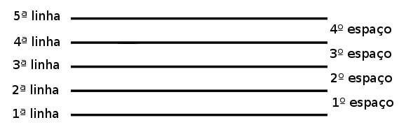
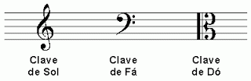
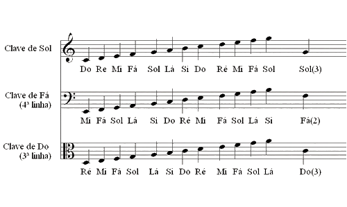
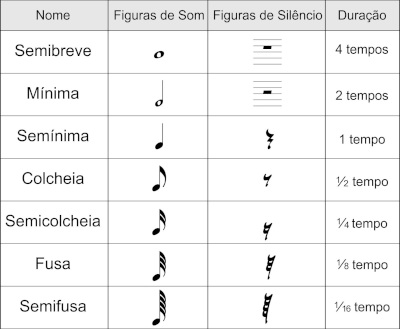
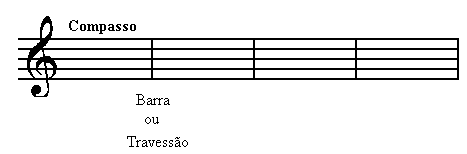
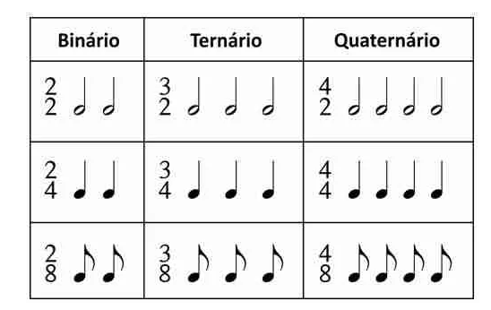

O que é teoria musical?

A Teoria Musical é tida por muitos como uma coisa chata e difícil, mas quando compreendida torna-se fácil e muito interessante, pois nos fará entender, questionar, definir e escrever o que tocamos ou mesmo cantamos. A teoria musical pode ser lida e estudada em qualquer parte do mundo graças a sua padronização, quando a conhecemos e a dominamos, temos acesso a ilimitadas matérias para estudo.
O som tem algumas propriedades importantes
Duração: é o tempo de produção do som. Altura: é a propriedade do som ser mais grave ou mais agudo. O apito de um trem é grave. A sirene de uma ambulância é aguda. Intensidade: é a propriedade do som ser mais forte ou mais fraco. Timbre: é a qualidade do som que permite uma pessoa reconhecer sua origem.
Na escrita musical, estas propriedades do som são representadas assim:
Duração: pela figura da nota e pelo andamento. Intensidade: pelos sinais de dinâmica. Por exemplo: Forte, Piano, Mezopiano, Mesoforte... Altura: pela posição da nota no pentagrama. Timbre: pela indicação da voz ou instrumento que deve executar a música.
O som musical (que esta no ar) é representado no papel por um sinal chamado figura de nota.
Representividade e simbolos na musica
Pentagrama: é um conjunto de cinco linhas horizontais eqüidistantes e quatro espaços. 
Figura 1: Pentagrama
Clave: é um sinal que se escreve no início do pentagrama para dar nome e altura às notas.
Existem três claves: de sol, de dó e de fá. São assim chamadas porque nas linhas onde são escritas, se encontram as notas: dó, fá e sol. 
Figura 2: Claves
Os sons musicais de acordo com a sua altura, recebem os seguintes nomes: dó, ré, mi, fá, sol, lá, si. Esses nomes se repetem de sete em sete do mais grave para o mais agudo. Oitava: dá-se o nome de oitava ao conjunto de notas existentes entre uma nota qualquer e a sua primeira repetição no grave ou no agudo. 
Figura 3: Nome das notas musicais e cada clave
A figura da nota indica a duração do som, pausa é um silêncio na música e tem duração variável. As notas e pausas são representada assim: 
Figura 4: Duração das notas e pausas
As pausas obedecem a mesma proporção das figuras.
Divisão de compassos
Compasso: é a divisão da música em pequenas partes de duração igual ou variável. Barra de compasso: é uma linha vertical que separa os compassos. Usa-se a barra dupla para separar seções da música, ou para concluí-la que neste caso é mais grossa. 
Figura 5: Compassos
O Número Representativo equivale a proporção das figuras em relação a semibreve, tomada como unidade de valor das outras figuras. O Número Representativo será sempre o mesmo e servirá de símbolo da figura, como por exemplo, na representação do numerador e/ou denominador da fração de tempo dos compassos. 
Figura 6: Fórmula de compassos
Atenção: o Número Representativo não é o tempo. Refere-se ao número de figuras necessárias para igualar seu valor ao de uma semibreve, tida aqui,como dito antes unidade de valor das figuras. (1 por 64 por exemplo, precisamos de 64 fusas para preenchermos o valor e uma semibreve).
Matricule-se já!

Teoria Musical - Iniciante
Aprenda a identificar os simbolos e estruturas da musica
R$ 50,00
Teoria Musical - Intermediário
Aprenda a ler partituras em compassos simples
R$ 70,00